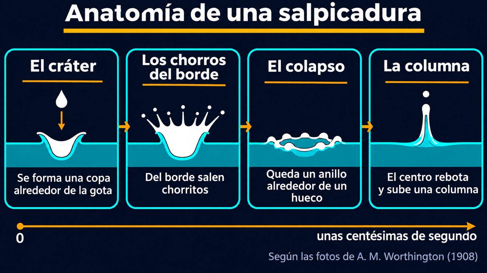
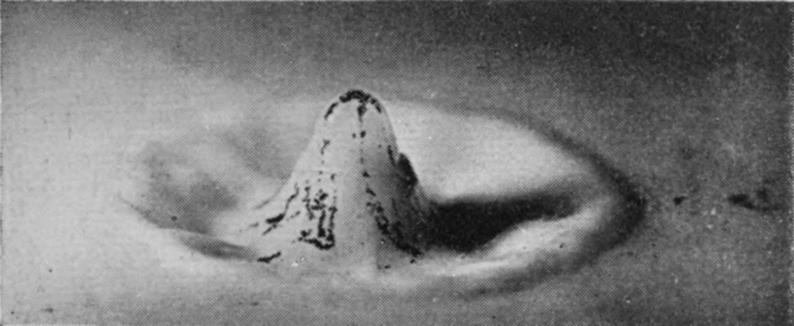
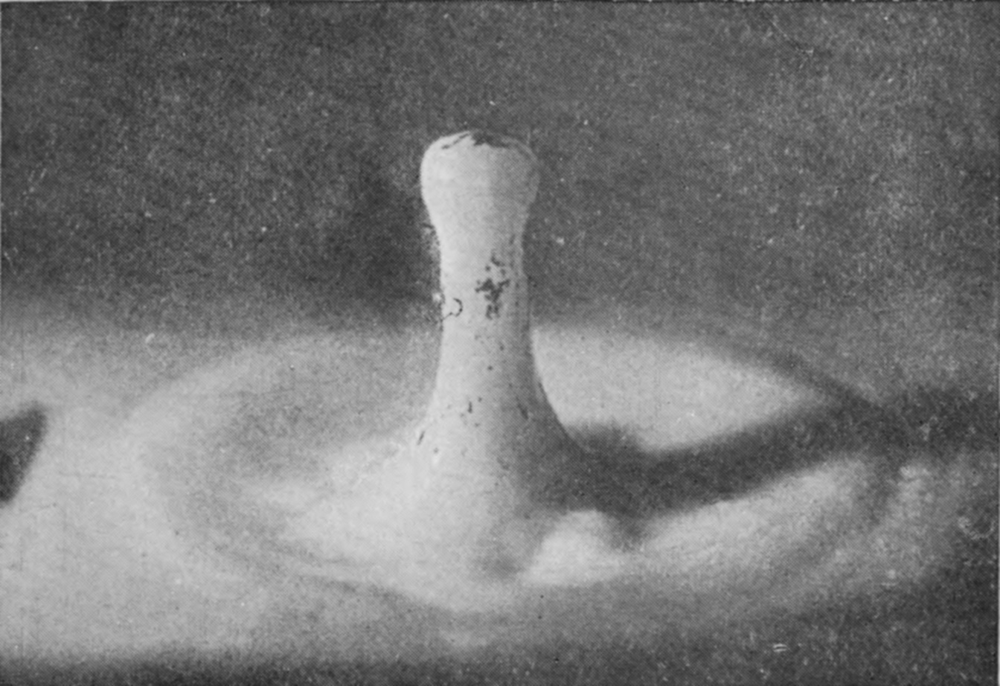

De las fotos con chispa eléctrica de Worthington a la gota que no salpica en el vacío
Una gota de leche cae en un plato con agua. Para el ojo, es un instante: un «plic» y unas ondas. Pero en esa centésima de segundo pasan muchas cosas. Se forma un cráter, de su borde salen chorritos, el cráter se desarma y del centro sube una columna. Para verlo hace falta una cámara mucho más rápida que el ojo, y la historia de cómo se logró es casi tan interesante como lo que muestra.
El físico Arthur Mason Worthington pasó años estudiando salpicaduras. En 1894 dio una conferencia en la Royal Institution sobre «la salpicadura de una gota», y en 1908 reunió su trabajo en un libro, A Study of Splashes, ilustrado con casi doscientas fotografías instantáneas [1]. El problema era la velocidad: los cambios de forma de una salpicadura son demasiado rápidos para cualquier cámara de cine de la época, y hasta el obturador más rápido es demasiado lento [1].
La solución fue iluminar con una chispa eléctrica muy corta. Worthington midió su duración fotografiando un disco de cartón que giraba a 53 vueltas por segundo, con el borde moviéndose a 36,5 m/s: como no se veía ningún corrimiento, concluyó que la chispa duraba menos de tres millonésimas de segundo [1]. Era tan corta que los negativos siempre salían subexpuestos y había que revelarlos unos cuarenta minutos [1].
Worthington describe así la caída de una gota de leche en agua [1]:
En su primera serie de fotos, de una gota de leche que cae desde 40 cm sobre agua, toda la secuencia, desde el contacto hasta el anillo de lóbulos, dura unos 0,056 segundos [1]. Un truco del experimento le dio información extra: la gota arrastraba hollín de la superficie de donde caía, y esas marcas negras mostraban que la pared interior del cráter estaba hecha del líquido de la gota original, y que ese mismo líquido salía después en la punta de la columna central [1].



Una piedra en un charco, en cámara lenta: cuando tirás una piedra a un charco, ves que el agua salta hacia los costados y después vuelve a subir en el medio. Una gota hace lo mismo a escala de milímetros: abre un hueco, lo rodea con una corona y, cuando el hueco se cierra, el líquido que converge en el centro sale disparado hacia arriba.
En una salpicadura compiten la inercia de la gota, que la hace desparramarse y romperse, y la tensión superficial, que tiende a mantenerla junta. Según Bush, del MIT, esa competencia se mide con el número de Weber [2]:
Con We chico, la tensión superficial gana y la gota se aplasta sin romperse; con We grande, gana la inercia y la gota se rompe en pedacitos (un razonamiento a partir de lo que mide We).
En 2005, Lei Xu, Wendy Zhang y Sidney Nagel, de la Universidad de Chicago, encontraron algo que nadie esperaba. Filmaron con cámaras de alta velocidad gotas de alcohol, de 3,1 mm de diámetro, que caían sobre un portaobjetos de vidrio liso dentro de una cámara de vacío [3]. A presión atmosférica, 100 kPa, la gota salpicaba. Un poco por encima de 38,4 kPa, la presión umbral, la gota apenas soltaba unas pocas gotitas. Y a presiones más bajas, no había salpicadura en absoluto [3].
La conclusión es sorprendente: el aire que rodea a la gota, que parecía no tener ningún papel, es necesario para que una gota salpique al chocar contra un sólido liso [3]. La presión umbral resultó depender del peso molecular del gas y de la viscosidad del líquido, y esas dos relaciones apoyan un modelo en el que la compresión del gas es la responsable de la salpicadura [3]. Xu, Zhang y Nagel recuerdan en su trabajo, además, las imágenes pioneras de Worthington [3].
Sobre un líquido o sobre un sólido: el libro de 1908 de Worthington trata gotas que caen en un líquido; la salpicadura sobre una placa sólida la había estudiado en su conferencia de 1894 [1]. El experimento de Xu, Zhang y Nagel es sobre un sólido liso y seco [3]. Son dos problemas distintos, aunque los dos terminan en coronas y gotitas.
Una salpicadura dura unas pocas centésimas de segundo, pero tiene una anatomía completa: cráter, corona, chorros y columna central. Worthington la reveló con chispas de menos de tres millonésimas de segundo, y un siglo después las cámaras rápidas mostraron que, sobre un sólido liso, la salpicadura depende del aire que la rodea. La tensión superficial, la inercia y hasta el gas que nadie miraba deciden cómo se rompe una gota.
Pregunta para la comunidad: Según el experimento de Xu, Zhang y Nagel, ¿salpicaría una gota de lluvia que cae sobre un vidrio en la cima de una montaña muy alta, donde la presión del aire es mucho menor que al nivel del mar? ¿Qué datos te faltan para estar seguro?